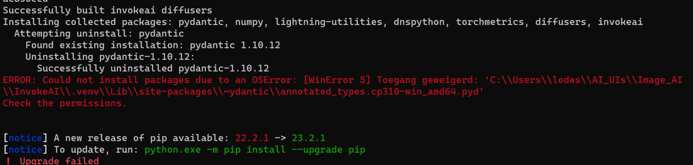

FAQ#
How to Reinstall
Many issues can be resolved by re-installing the application. You won't lose any data by re-installing. We suggest downloading the latest release and using it to re-install the application. Consult the installer guide for more information.
When you run the installer, you'll have an option to select the version to install. If you aren't ready to upgrade, you choose the current version to fix a broken install.
If the troubleshooting steps on this page don't get you up and running, please either create an issue or hop on discord for help.
How to Install#
You can download the latest installers here.
Note that any releases marked as pre-release are in a beta state. You may experience some issues, but we appreciate your help testing those! For stable/reliable installations, please install the latest release.
Downloading models and using existing models#
The Model Manager tab in the UI provides a few ways to install models, including using your already-downloaded models. You'll see a popup directing you there on first startup. For more information, see the model install docs.
Missing models after updating to v4#
If you find some models are missing after updating to v4, it's likely they weren't correctly registered before the update and didn't get picked up in the migration.
You can use the Scan Folder tab in the Model Manager UI to fix this. The models will either be in the old, now-unused autoimport folder, or your models folder.
- Find and copy your install's old
autoimportfolder path, install the main install folder. - Go to the Model Manager and click
Scan Folder. - Paste the path and scan.
- IMPORTANT: Uncheck
Inplace install. - Click
Install Allto install all found models, or just install the models you want.
Next, find and copy your install's models folder path (this could be your custom models folder path, or the models folder inside the main install folder).
Follow the same steps to scan and import the missing models.
Slow generation#
- Check the system requirements to ensure that your system is capable of generating images.
- Check the
ramsetting ininvokeai.yaml. This setting tells Invoke how much of your system RAM can be used to cache models. Having this too high or too low can slow things down. That said, it's generally safest to not set this at all and instead let Invoke manage it. - Check the
vramsetting ininvokeai.yaml. This setting tells Invoke how much of your GPU VRAM can be used to cache models. Counter-intuitively, if this setting is too high, Invoke will need to do a lot of shuffling of models as it juggles the VRAM cache and the currently-loaded model. The default value of 0.25 is generally works well for GPUs without 16GB or more VRAM. Even on a 24GB card, the default works well. - Check that your generations are happening on your GPU (if you have one). InvokeAI will log what is being used for generation upon startup. If your GPU isn't used, re-install to ensure the correct versions of torch get installed.
- If you are on Windows, you may have exceeded your GPU's VRAM capacity and are using slower shared GPU memory. There's a guide to opt out of this behaviour in the linked FAQ entry.
Shared GPU Memory (Windows)#
Nvidia GPUs with driver 536.40
This only applies to current Nvidia cards with driver 536.40 or later, released in June 2023.
When the GPU doesn't have enough VRAM for a task, Windows is able to allocate some of its CPU RAM to the GPU. This is much slower than VRAM, but it does allow the system to generate when it otherwise might no have enough VRAM.
When shared GPU memory is used, generation slows down dramatically - but at least it doesn't crash.
If you'd like to opt out of this behavior and instead get an error when you exceed your GPU's VRAM, follow this guide from Nvidia.
Here's how to get the python path required in the linked guide:
- Run
invoke.bat. - Select option 2 for developer console.
- At least one python path will be printed. Copy the path that includes your invoke installation directory (typically the first).
Installer cannot find python (Windows)#
Ensure that you checked Add python.exe to PATH when installing Python. This can be found at the bottom of the Python Installer window. If you already have Python installed, you can re-run the python installer, choose the Modify option and check the box.
Triton error on startup#
This can be safely ignored. InvokeAI doesn't use Triton, but if you are on Linux and wish to dismiss the error, you can install Triton.
Updated to 3.4.0 and xformers can’t load C++/CUDA#
An issue occurred with your PyTorch update. Follow these steps to fix :
- Launch your invoke.bat / invoke.sh and select the option to open the developer console
- Run:
pip install ".[xformers]" --upgrade --force-reinstall --extra-index-url https://download.pytorch.org/whl/cu121 - If you run into an error with
typing_extensions, re-open the developer console and run:pip install -U typing-extensions
Note that v3.4.0 is an old, unsupported version. Please upgrade to the latest release.
Install failed and says pip is out of date#
An out of date pip typically won't cause an installation to fail. The cause of the error can likely be found above the message that says pip is out of date.
If you saw that warning but the install went well, don't worry about it (but you can update pip afterwards if you'd like).
Replicate image found online#
Most example images with prompts that you'll find on the internet have been generated using different software, so you can't expect to get identical results. In order to reproduce an image, you need to replicate the exact settings and processing steps, including (but not limited to) the model, the positive and negative prompts, the seed, the sampler, the exact image size, any upscaling steps, etc.
OSErrors on Windows while installing dependencies#
During a zip file installation or an update, installation stops with an error like this:

To resolve this, re-install the application as described above.
HuggingFace install failed due to invalid access token#
Some HuggingFace models require you to authenticate using an access token.
Invoke doesn't manage this token for you, but it's easy to set it up:
- Follow the instructions in the link above to create an access token. Copy it.
- Run the launcher script.
- Select option 2 (developer console).
- Paste the following command:
- Paste your access token when prompted and press Enter. You won't see anything when you paste it.
- Type
nif prompted about git credentials.
If you get an error, try the command again - maybe the token didn't paste correctly.
Once your token is set, start Invoke and try downloading the model again. The installer will automatically use the access token.
If the install still fails, you may not have access to the model.
Stable Diffusion XL generation fails after trying to load UNet#
InvokeAI is working in other respects, but when trying to generate images with Stable Diffusion XL you get a "Server Error". The text log in the launch window contains this log line above several more lines of error messages:
INFO --> Loading model:D:\LONG\PATH\TO\MODEL, type sdxl:main:unet
This failure mode occurs when there is a network glitch during downloading the very large SDXL model.
To address this, first go to the Model Manager and delete the Stable-Diffusion-XL-base-1.X model. Then, click the HuggingFace tab, paste the Repo ID stabilityai/stable-diffusion-xl-base-1.0 and install the model.
Package dependency conflicts during installation or update#
If you have previously installed InvokeAI or another Stable Diffusion
package, the installer may occasionally pick up outdated libraries and
either the installer or invoke will fail with complaints about
library conflicts.
To resolve this, re-install the application as described above.
Invalid configuration file#
Everything seems to install ok, you get a ValidationError when starting up the app.
This is caused by an invalid setting in the invokeai.yaml configuration file. The error message should tell you what is wrong.
Check the configuration docs for more detail about the settings and how to specify them.
ModuleNotFoundError: No module named 'controlnet_aux'#
controlnet_aux is a dependency of Invoke and appears to have been packaged or distributed strangely. Sometimes, it doesn't install correctly. This is outside our control.
If you encounter this error, the solution is to remove the package from the pip cache and re-run the Invoke installer so a fresh, working version of controlnet_aux can be downloaded and installed:
- Run the Invoke launcher
- Choose the developer console option
- Run this command:
pip cache remove controlnet_aux - Close the terminal window
- Download and run the installer, selecting your current install location
Out of Memory Issues#
The models are large, VRAM is expensive, and you may find yourself faced with Out of Memory errors when generating images. Here are some tips to reduce the problem:
Optimizing for GPU VRAM
This should be adequate for 512x512 pixel images using Stable Diffusion 1.5 and derived models, provided that you do not use the NSFW checker. It won't be loaded unless you go into the UI settings and turn it on.
If you are on a CUDA-enabled GPU, we will automatically use xformers or torch-sdp to reduce VRAM requirements, though you can explicitly configure this. See the configuration docs.
This is a border case. Using the SD 1.5 series you should be able to generate images up to 640x640 with the NSFW checker enabled, and up to 1024x1024 with it disabled.
If you run into persistent memory issues there are a series of environment variables that you can set before launching InvokeAI that alter how the PyTorch machine learning library manages memory. See https://pytorch.org/docs/stable/notes/cuda.html#memory-management for a list of these tweaks.
This should be sufficient to generate larger images up to about 1280x1280.
Memory Leak (Linux)#
If you notice a memory leak, it could be caused to memory fragmentation as models are loaded and/or moved from CPU to GPU.
A workaround is to tune memory allocation with an environment variable:
# Force blocks >1MB to be allocated with `mmap` so that they are released to the system immediately when they are freed.
MALLOC_MMAP_THRESHOLD_=1048576
Speed vs Memory Tradeoff
Your generations may be slower overall when setting this environment variable.
Possibly dependent on libc implementation
It's not known if this issue occurs with other libc implementations such as musl.
If you encounter this issue and your system uses a different implementation, please try this environment variable and let us know if it fixes the issue.
Detailed Discussion
Python (and PyTorch) relies on the memory allocator from the C Standard Library (libc). On linux, with the GNU C Standard Library implementation (glibc), our memory access patterns have been observed to cause severe memory fragmentation.
This fragmentation results in large amounts of memory that has been freed but can't be released back to the OS. Loading models from disk and moving them between CPU/CUDA seem to be the operations that contribute most to the fragmentation.
This memory fragmentation issue can result in OOM crashes during frequent model switching, even if ram (the max RAM cache size) is set to a reasonable value (e.g. a OOM crash with ram=16 on a system with 32GB of RAM).
This problem may also exist on other OSes, and other libc implementations. But, at the time of writing, it has only been investigated on linux with glibc.
To better understand how the glibc memory allocator works, see these references:
- Basics: https://www.gnu.org/software/libc/manual/html_node/The-GNU-Allocator.html
- Details: https://sourceware.org/glibc/wiki/MallocInternals
Note the differences between memory allocated as chunks in an arena vs. memory allocated with mmap. Under glibc's default configuration, most model tensors get allocated as chunks in an arena making them vulnerable to the problem of fragmentation.